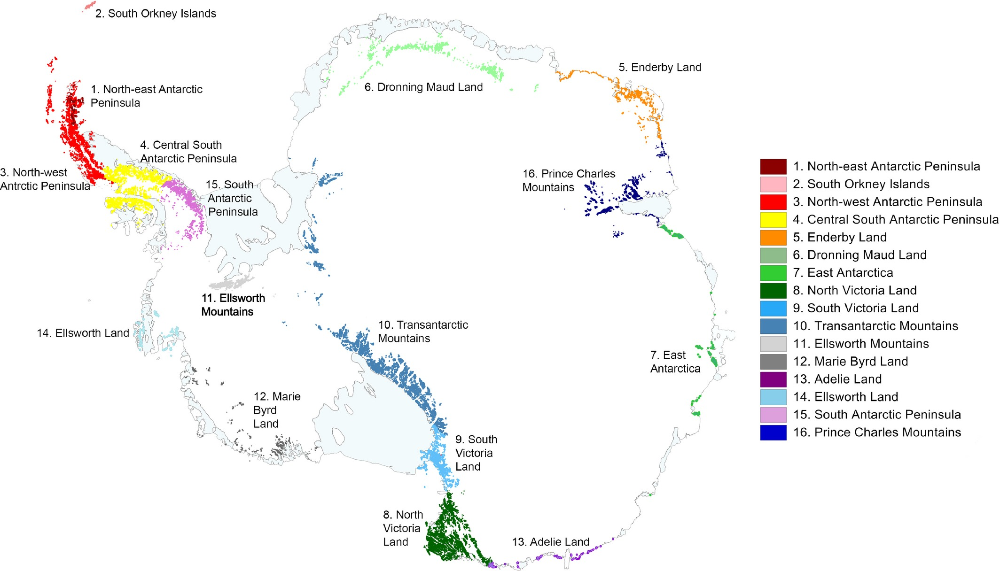

Approach 01 — Direct Sampling
One approach to gaining this understanding of these soils is to take a diverse array of thousands of samples from all 28 distinct
ice-free regions and analyzing their geochemical properties in a lab

Antarctic Conservation Biogeographic Regions (ACBRs)
But sampling everywhere just isn't realistic
Costly expeditions & lab work cost thousands
Short seasons inhibit
field work exhibitions
field work exhibitions
Remote areas further impede sampling
efforts
efforts
The reality
Because of these constraints, for the
entire continent, our lab has analyzed
just 171 samples in 4 regions
Ideal coverage would require thousands
of samples from all 28 ACBR regions.
What we have is a mere fraction of that.

171 samples · 4 regions · 28 locations
NW Antarctic Peninsula
Transantarctic Mountains
South Victoria Land
North Victoria Land